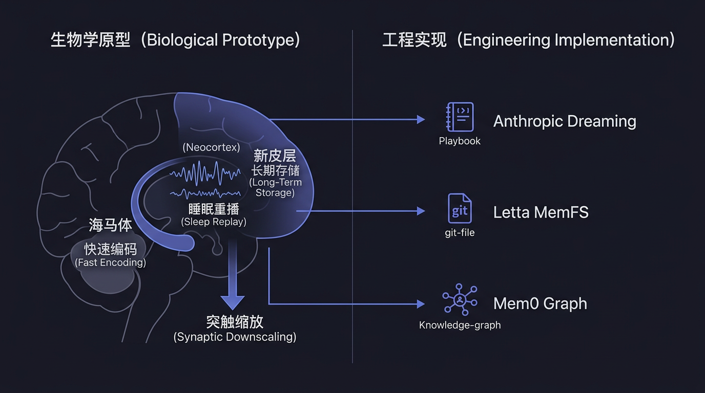
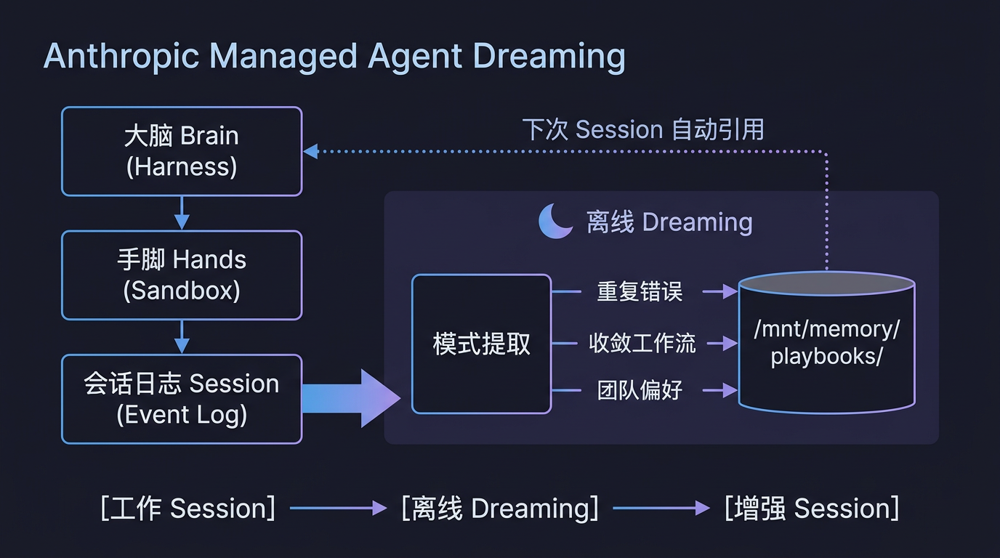
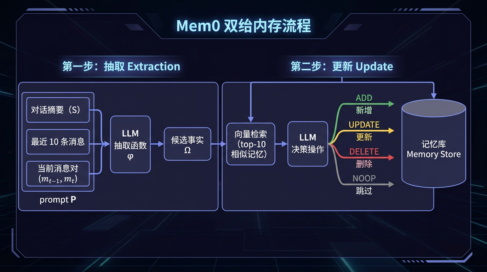
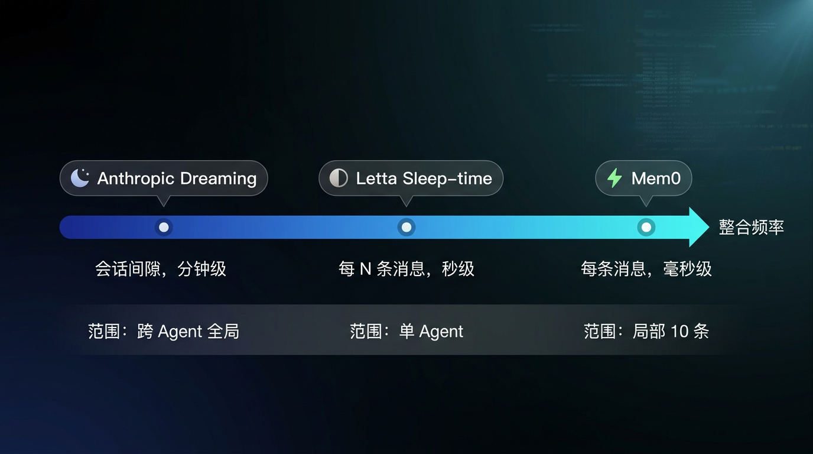
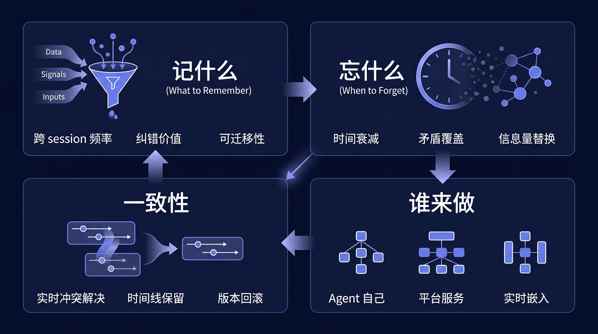
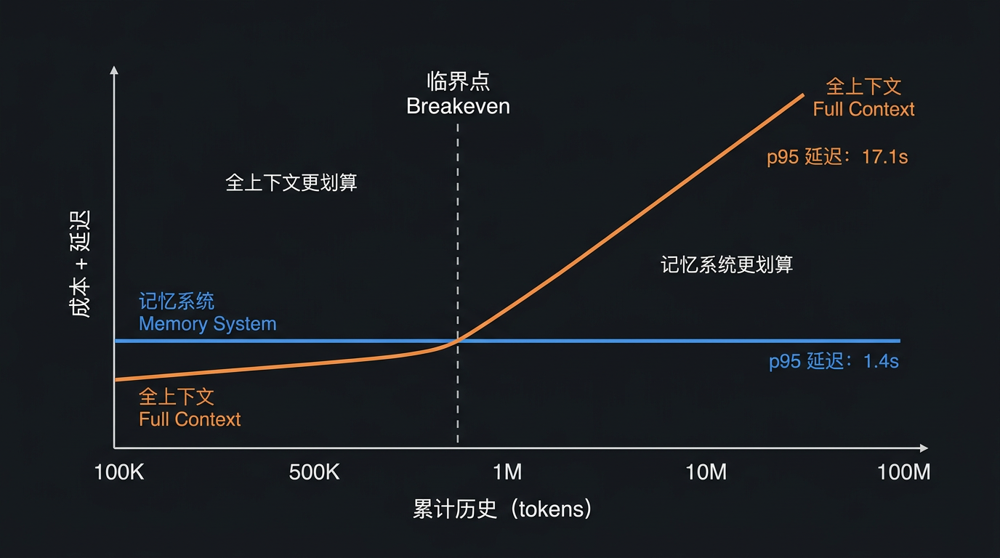

Harvey 是一家用 AI 做法律工作的公司。2026 年 5 月，他们给自己的 Agent 开了一个叫 Dreaming 的功能。没换模型，没改 prompt，任务完成率直接涨了 6 倍。
原因很简单：法律工作里有大量重复性流程错误。Agent 第一次犯了，第二次还犯，第一百次照样犯，因为每次 session 结束后它什么都不记得。Dreaming 做的事情是：在两次 session 之间，回顾一下历史，把反复出现的错误提取成一条规则。下次再遇到同类任务，规则自动生效。
这不是什么新概念。人类的大脑每天都在做类似的事，不是在做事的时候学得最快，而是在睡觉的时候。神经科学里有一个精确的描述：睡眠期间，海马体把白天编码的经历以加速模式重播给新皮层，新皮层在没有新输入干扰的情况下慢慢将其整合成长期知识。
Agent 现在也开始睡觉了。Agent 在两次工作之间到底要做什么，才能让自己下一次表现更好？
Anthropic 在 Dreaming 的设计文档中明确对标了海马体记忆整合。这不是一个文学比喻，是架构设计的参考来源。生物学机制中的每个关键节点都能在工程实现中找到对应物。
大脑做记忆不是把经历写进一个数据库这么简单。它有两套系统在平行运作：
海马体负责快速编码。白天发生的事情，你走过的路、说过的话、做过的决定，先被海马体以高保真度记录下来。编码速度快，容量有限，细节丰富但不稳定。
新皮层负责长期存储。知识、规则、模式，开车要先看后视镜、这个客户喜欢简洁的报告，这些是新皮层的地盘。学得慢，但一旦学会就很稳定。
为什么需要两套系统？McClelland 等人在 1995 年提出的 Complementary Learning Systems 理论给了精确回答：如果只有一个系统，快速学习新经历会覆盖掉已有的稳定知识。这在机器学习里叫 catastrophic forgetting，生物学里早就解决了，方案就是分成两个系统，各干各的。
映射到 Agent：session 中的实时交互是海马体编码，快速、详细、不稳定（session 结束就丢了）。持久化的记忆系统是新皮层，慢、抽象、稳定。中间那一步怎么做，就是本文的核心问题。
人不是在睡觉时什么都不干。睡眠的慢波阶段（NREM sleep），海马体中的神经元会以 5 到 20 倍速重播白天的活动模式。这个过程有几个关键特征：
不是完整回放。重播是选择性的，与奖励相关的经历被优先重播（McNamara et al., 2014）。不是每件事都值得记住。
需要安静的环境。重播发生在睡眠中是有原因的：新皮层需要在没有新感觉输入干扰的情况下才能安全地整合新信息。如果边接收新输入边整合旧经历，两套信息会互相干扰。整合必须离线做。
由三层嵌套振荡协调。慢振荡（<1 Hz）提供时间窗口，睡眠纺锤波（12-16 Hz）促进突触可塑性，海马体 sharp-wave ripples（140-200 Hz）在其中触发具体的重播事件。三者精确地嵌套在一起（Latchoumane et al., 2017 称之为三重锁相）。
重播不是唯一的事。睡眠中还发生全局性的突触缩放（synaptic downscaling），所有突触的强度整体下降。
这看起来违反直觉：学习不是要增强连接吗？但缩放的效果是提高信噪比。所有连接都降了，只有那些在重播中被反复激活的连接被选择性保留。重要的模式变得更突出，噪音被压下去。
de Vivo et al., 2017 用超微结构证据证实了这一点。Yang et al., 2014 发现学习后的睡眠促进了特定树突分支上的新突触形成，不是随机加强，是精准加强。

| 生物学 | Agent 系统 |
|---|---|
| 海马体快速编码 | Session 中的实时交互记录 |
| 睡眠重播 | Dreaming / sleep-time subagent 回顾历史 |
| 选择性重播 | 只提取有价值的 pattern（错误修复、工作流收敛） |
| 新皮层整合 | 持久化记忆更新（playbook / MemFS / graph store） |
| 突触缩放 | 记忆修剪、过期删除、信息量对比替换 |
| 离线无干扰 | Session 间隔期，不处理新用户请求 |
Anthropic 在官方描述中直接说 Dreaming 模仿的就是 hippocampal memory consolidation。
2026 年中，三种不同的工程路线正在同时被验证。它们解决的是同一个问题，让 Agent 在 session 间隙变得更好，但做出了不同的设计取舍。

Anthropic 的方案最接近生物学原型：显式地在工作和休息之间划了一条线。
架构基础：Brain-Hands-Session 三层解耦。要理解 Dreaming，先要理解它运行在什么基础设施上。Anthropic 在 2026 年 4 月将 Managed Agents 重构为三个独立组件：
execute(name,
input) → string 接口调用
这个三层解耦是 Dreaming 的前提。Session event log 存储了 Agent 所有行为的完整记录，工具调用、推理过程、错误信息、恢复策略，且不会因为
harness 重启或容器销毁而丢失。Brain 通过 getEvents()
按位置切片读取 event stream，通过 emitEvent(id,
event) 写入持久记录。
Dreaming 的输入就是这个 event log。它不需要 Agent 回忆，历史被完整保留在外部存储里，随时可以被重新审视。
运行时机与生命周期。Session 结束后异步启动，不需要手动触发，系统按调度计划执行。持续时间从几分钟到几十分钟不等，取决于需要审查的历史量。
关键点：Dreaming 运行时 Agent 不在工作。这对应生物学中不能边接收新输入边整合旧经历的约束，新皮层需要安静环境才能做整合。如果 Agent 一边处理用户请求一边做 dreaming，两个过程写入同一个记忆空间会产生竞态。
三类 Pattern 提取。Dreaming 遍历历史 session 的 transcript，提取：
提取结果以 plain-text notes 或 structured playbook 的形式写入记忆。Playbook 不是随意的文本，它是 Agent 后续 session 中可以被引用的结构化参考。
控制权设计：人在回路中。开发者可以选择两种模式：
这个设计决策背后的逻辑是：Dreaming 本身是一个 LLM 推理过程，它在做归纳，从有限样本中提炼规律。归纳天然可能出错。十次巧合可能被提炼成一条规律，然后持续误导后续的每一个 session。手动审核是安全阀，但也是瓶颈，如果 dreaming 每天产出几十条 pattern，开发者的审核带宽就成了系统的吞吐上限。
审计与回滚。所有写入都在 session event stream 中可见。版本控制是不可变的，每次 dreaming 写入产生一个新版本，旧版本永远可访问。如果某个 pattern 后来被发现有问题（误导 Agent 产出错误结果），可以精确定位到是哪次 dreaming 引入的，然后回滚到之前的版本。
在生产环境中，Agent 为什么突然开始犯这个错这类问题的根因追踪，需要精确的变更历史。Anthropic 把记忆系统做成了一个 audit log。
Memory Tool 的存储位置。Agent
的持久记忆挂载在容器内的 /mnt/memory/
路径。Claude 通过 bash 和 code-execution 工具读写这些文件。存储后端由客户控制，可以是本地文件系统，也可以是 S3。API
使用需要 beta header context-management-2025-06-27。
记忆不是 Anthropic 的黑箱，而是客户基础设施的一部分。开发者可以直接检查 Agent 记忆的内容、修改它、用脚本批量更新。Dreaming
写入的 playbook 也存在这里，开发者可以 cat
/mnt/memory/playbooks/ 直接看到 dreaming 产出了什么。
Harvey 的 6x 为什么在法律领域特别有效。法律流程的特点是：步骤高度固定、错误具有系统性、同类任务的重复率极高。一个忘记检查管辖区要求的错误可能在 50 个不同的案件中以完全相同的方式出现，不是因为 Agent 不懂，而是因为它没有一个持久化的检查清单来提醒自己。
Dreaming 发现这个 pattern 后，一条规则修复全部 50 个案件。6x 数字的来源不是每次任务单独变好了 6 倍，而是一类系统性错误被一次性消除，通过率整体跃升。
反例：如果场景是每次任务都完全不同的创意写作，历史经验几乎无法迁移，dreaming 的 ROI 就趋近于零。6x 这个数字高度依赖任务的重复性结构。
Letta（MemGPT 的商业化产品）走了另一条路：不搞集中审查，让每个 Agent 自己管自己的记忆。
MemGPT 的遗产。MemGPT（2023，UC
Berkeley）的核心洞察是把 LLM 的上下文窗口类比为操作系统的物理内存，有限、易失、需要虚拟化。Agent 通过调用 core_memory_append、core_memory_replace、archival_memory_search、conversation_search
等函数主动管理自己的记忆，而不是被动等待系统帮它管。
Letta 后来反复强调的关键原则：
"Agents do not passively receive context — they explicitly call memory management functions to move information between tiers."
Agent 不是被动地被注入上下文，而是主动决定自己需要记住什么、检索什么、忘掉什么。
Letta 在此基础上演化出了 MemFS：一个 git-backed 的 markdown 文件系统。记忆不再是 vector database 里的一堆 embedding，而是实实在在的文件，Agent 用 bash 工具读写，改完 commit，有完整版本历史。
MemFS 的结构与记忆分层。
~/.letta/agents/<agent-id>/memory/
├── system/ ← 始终加载进 system prompt（工作记忆）
│ ├── identity.md
│ ├── rules.md
│ └── preferences.md
├── projects/ ← 文件名可见，内容需要检索
│ ├── project-a.md
│ └── project-b.md
└── archive/ ← 长期归档
└── ...
system/
目录下的文件永远被完整加载进 system prompt，相当于 Agent 的随时可用工作记忆，类似大脑的前额叶缓存。其他目录的文件只暴露文件名和描述，内容需要
Agent 主动请求才加载。这个分层保证了 context window 的精简：Agent 的核心身份始终在线，但不会被几百个历史记忆文件撑爆。
Sleep-time subagent 的触发与执行。Letta
的 /sleeptime
配置支持三种触发模式：
Compaction 触发的逻辑是：当 Agent 的上下文窗口即将溢出、系统执行 compaction（压缩早期对话为摘要）时，正是信息从工作记忆向长期记忆迁移的自然时机。这对应生物学中海马体缓冲区满了触发整合的机制。
触发后发生什么：
文档强调 subagent "generally run for many steps since subagents are thorough memory editors"。一个 sleep-time 周期可能涉及：读取 5 个记忆文件、对比当前对话内容、决定更新 2 个文件的某些段落、新建 1 个文件记录新发现的偏好、删除 1 个过时的文件。这是一个小型推理任务，不是简单的追加一行。
Sleep-time 能做什么。具体的编辑操作包括：
system/
下新增一条持久规则（比如发现用户反复要求中文输出，写入 system/preferences.md）
Letta 还提供辅助命令辅助记忆维护：
/remember：用户主动指示
Agent 记住某件事
/init：对
Agent 做初始化分析，从历史中建立初始记忆
/doctor：审计当前记忆布局，修剪冗余、优化
token 使用
与 Anthropic Dreaming 的根本差异：
| 维度 | Anthropic Dreaming | Letta Sleep-time |
|---|---|---|
| 执行者 | 平台级服务（跨 agent） | Agent 自己的 subagent |
| 触发时机 | Session 间隔（纯离线） | 连续（每 N 条消息 / compaction） |
| 输入范围 | 全部历史 session log | 当前对话 + 已有 MemFS |
| 作用范围 | 跨 agent、team-level | 单个 agent 内部 |
| 输出形式 | Playbook / notes | 文件编辑 + git commit |
| 存储抽象 | 挂载文件系统
/mnt/memory/
|
Git-backed markdown（MemFS） |
| 控制方式 | 开发者审核 | Agent 自主决策 |
| 能否发现团队模式 | 能 | 不能 |
| 回滚机制 | Immutable versioning | git revert |
Letta 的方案更自治，Agent 是自己记忆的主人。代价是双重的：每个 Agent 只能从自己的经历中学习，看不到别的 Agent 踩过的坑；同时 Agent 的记忆编辑质量取决于 subagent 本身的推理能力，如果 subagent 做了错误的归纳，没有外部审核机制来拦截。
Mem0 选择了第三条路：干脆不做梦，把整合嵌入到实时推理流程中。
为什么算第三种做梦。严格来说 Mem0 没有离线阶段。但它在做的事情，从交互中抽取事实、与已有记忆对比、决定保留/更新/删除，和 dreaming 的本质操作是一样的。区别只在于什么时候做：Anthropic 在 session 间隔做，Letta 在 N 条消息后做，Mem0 在每条消息时就做。
它代表了整合频谱的另一个极端：完全连续、零延迟、但也零全局视野。
双阶段管线（Algorithm 1）。每一对新消息 (m_{t-1}, m_t) 经过两步处理：

第一步：抽取（Extraction）。系统构建一个综合提示 P，包含四个上下文源：
P = (S, {m_{t-m}, ..., m_{t-2}}, m_{t-1}, m_t)
其中：
- S = Conversation Summary（异步更新的全局对话摘要）
- {m_{t-m}, ..., m_{t-2}} = 最近 m=10 条历史消息
- m_{t-1}, m_t = 当前消息对这个提示被喂给 LLM 抽取函数 φ，产出候选事实集合 Ω = {ω₁, ω₂, ..., ωₙ}。
为什么需要 Conversation Summary？因为只看最近 10 条消息不够，用户可能在 50 条消息前提过一个重要偏好，如果不带全局摘要，抽取函数会忘记它。异步摘要生成模块独立于主管线运行，定期更新，不阻塞主流程。
第二步：更新（Update）。对每个候选事实 ωᵢ：
| 操作 | 触发条件 | 效果 |
|---|---|---|
| ADD | 没有语义等价的记忆存在 | 创建新记忆条目 |
| UPDATE | 有相似记忆，但新信息更丰富 | 用更完整的版本替换 |
| DELETE | 新信息和已有记忆直接矛盾 | 移除旧记忆 |
| NOOP | 信息已存在或无关紧要 | 不做任何修改 |
关键设计选择：Mem0 没有用独立的分类器来做操作判断，直接让 LLM 基于语义关系推理。论文的解释是：操作选择需要理解两条信息之间的语义关系是什么，这正是 LLM 擅长的事。
Mem0g：Graph 版的时间线保留。Mem0 的增强版 Mem0g 用知识图谱替代纯向量存储。图结构 G = (V, E, L)，其中节点 V 是实体（人、地点、概念），边 E 是关系（lives_in, prefers, owns），标签 L 是语义类型。
Mem0g 的关键差异在于 DELETE 操作的实现：不物理删除节点或边，而是标记关系为 invalid。这保留了记忆演变的完整时间线：
(Alice) --[lives_in, active]--> (Shanghai)
(Alice) --[lives_in, invalid, ended: 2025-03]--> (Beijing)为什么要保留历史？因为某些场景需要回答以前是什么，法律审计、变更追溯、时间线推理。Mem0g 在 LOCOMO benchmark 的时间推理任务上得分 58.13%，比 Mem0 base 的 55.51% 高出近 3 个点，验证了这个设计选择的价值。
Mem0g 的双检索策略。查询时有两条路径可以走：
两条路径互补：entity-centric 擅长结构化推理（Alice 住哪里），semantic triplet 擅长模糊匹配（上次讨论过的那个城市）。
性能数据（LOCOMO benchmark，GPT-4o-mini 作为推理引擎）：
| 指标 | Mem0 | Mem0g | 全上下文 | 最佳 RAG |
|---|---|---|---|---|
| 综合 J 分 | 66.88% | 68.44% | 72.90% | 60.97% |
| 搜索延迟 p50 | 0.148s | 0.476s | — | 0.288s |
| 总延迟 p95 | 1.440s | 2.590s | 17.117s | 9.942s |
| 记忆 token 消耗 | 7K | 14K | 26K | 可变 |
| 时间推理 J 分 | 55.51% | 58.13% | — | ~50% |
Mem0 的搜索延迟是所有方案中最低的，p50 仅 0.148 秒。对比 LangMem 的 p50 17.99 秒（接近 18 秒），或者 Zep 的 0.513 秒。这个速度使得每条消息都做整合在延迟上完全可行。
Mem0 的本质局限。它的整合窗口是当前消息 + 最近 10 条 + 全局摘要。这意味着：
一个具体的例子：假设 Agent 在过去两周内，每次处理 Excel 文件时都会在合并单元格步骤出错，但每次出错的具体表现略有不同。Mem0 会在每次出错时修正当次的事实记忆（这个文件的合并单元格有问题），但它不会发现你在合并单元格这个操作上有系统性问题。发现这种宏观 pattern 需要回顾所有历史 session，这正是 Dreaming 做的事。
Mem0 和 Dreaming 不是竞争关系，而是互补关系。

把三种方案放在一起看：
| Anthropic Dreaming | Letta Sleep-time | Mem0 实时整合 | |
|---|---|---|---|
| 整合时机 | 离线（session 间隔） | 半在线（N 消息一次） | 实时（每条消息） |
| 整合范围 | 全局（跨 agent） | 单 agent 全历史 | 局部（最近 10 条） |
| 能发现什么 | 团队级宏观 pattern | 个体级长期趋势 | 局部矛盾和更新 |
| 延迟 | 分钟级（离线完成） | 秒级（后台运行） | 毫秒级（实时内嵌） |
| 失败后果 | Pattern 有错→影响所有 agent | 记忆编辑有误→单个 agent | 判断错→影响当前事实 |
| 回滚能力 | Immutable versioning | Git history | 标记 invalid（Mem0g） |
没有哪条路更好。选择取决于：

无论选哪条技术路线，任何做梦系统都绕不开四个设计问题。这些问题没有标准答案，每个系统做的都是权衡。
记住一切是最懒的方案，也是最差的方案。Zep 的案例是一个具体的警示：它在每个图节点上缓存完整的抽象摘要，加上边上存储的事实，总 token 消耗达到 600K+。对比之下 Mem0 的同等语义覆盖只需要 7K tokens，差了接近两个数量级。更多记忆不等于更好的记忆。当记忆规模大到检索噪音淹没信号时，Agent 的表现反而退化。
什么信息值得被 dreaming 提取？三个筛选标准按优先级排列：
跨 session 复现频率。同一个错误出现三次以上，说明它不是偶发的，是系统性的。Harvey 的案例正是如此，忘记检查管辖区要求不是某一次的疏忽，是流程设计的缺陷。频率是最硬的信号，因为它不依赖 LLM 的判断力，统计就能做。
纠错价值（被发现后能产生多大改善）。有些 pattern 被发现后能显著改善结果：
有些则无关紧要：
纠错价值的判断目前完全依赖 LLM 的推理能力，没有形式化的度量方式。这是 dreaming 系统最大的软肋，它依赖归纳推理，而归纳推理可能出错。
跨任务可迁移性。如果一个 pattern 只适用于这篇文档的第三段，它的持久化价值极低，下次不会再遇到完全相同的文档。但如果它适用于所有包含合并单元格的 Excel 文件，就值得固化成规则。
迁移性高的 pattern 比如：
迁移性低的 pattern：
记忆无限膨胀的后果不是占用更多存储（存储很便宜），真正的代价是检索质量退化。当 Agent 的记忆库里有 10,000 条记忆时，每次检索 top-10 的相关性分布会变得很平坦：第 1 名和第 10 名的相似度分数差距缩小，LLM 更难从中挑选出真正相关的那条。
三种遗忘的工程策略，对应不同的代谢模型：
时间衰减（Decay）。每条记忆有一个活跃度分数，随时间自然下降。长期未被检索命中的记忆逐渐被降权。降到阈值以下就移入 archive 或删除。这是最简单的策略，但有明显缺陷：有些记忆频率低但重要性极高（比如绝对不能给这个客户发中文邮件，可能一年只触发一次，但触发时必须生效）。纯时间衰减会误杀这类低频高重要性记忆。
矛盾覆盖（Contradiction-driven deletion）。新事实和旧记忆矛盾时，旧的让位。这是 Mem0 的 DELETE 操作在做的事：LLM 判断新旧信息是否矛盾，如果矛盾则删除旧的（或在 Mem0g 中标记为 invalid）。优点：不需要人为设定衰减参数，由数据自身的一致性驱动。缺点：依赖 LLM 正确判断什么构成矛盾，有时候两条看似矛盾的记忆是不同时间点的正确描述（Q1 预算 50 万和 Q2 预算 80 万不矛盾，是时间维度不同）。
信息量对比（Information density replacement）。Mem0 的 UPDATE 逻辑：如果新事实的信息量（InformationContent）大于已有记忆，用新的替换旧的。
旧记忆："他喜欢咖啡"
新事实："他喜欢手冲咖啡，偏好浅烘豆，最近在试肯尼亚产区"
判断：新 > 旧（信息更丰富），执行 UPDATE这个策略的前提假设是：更详细 = 更好。大多数场景下成立，但有例外，有时候旧的简洁版本更适合快速检索（他喜欢咖啡作为一个 tag 可能比详细版更适合粗筛）。
生物学中的对应物：突触缩放不是删除。大脑在睡眠中做的不是把某些突触删掉，而是全局降低所有突触强度，但被重播激活的连接被选择性恢复。效果是信噪比提高，不重要的自然变淡，重要的被维持。
Agent 的理想遗忘策略可能也是类似的：不是主动删除某些记忆，而是在每次检索时对所有记忆做 relevance-weighted ranking，让不相关的自然排到后面、永远不被调用。这种被动遗忘比主动删除更安全，不会误杀低频高价值记忆。
Agent 周一学到客户 A 的预算是 50 万，周三又学到客户 A 的预算是 80 万。如果两条记忆同时存在且都标记为 active，Agent 下次被问客户 A 的预算是多少时会给出不确定的答案，甚至幻觉一个折中值。
一致性维护的三种工程路线：
实时冲突解决（Mem0）。每次新事实进入时，立即和已有记忆对比。如果发现矛盾，当场处理：
好处：矛盾不会积累，记忆库在任何时刻都是尽可能一致的。坏处：实时判断依赖单次 LLM 调用的准确性。如果那一次判断错了（把补充误判为矛盾），正确的旧记忆可能被误删，且没有回头的余地（除非用 Mem0g 的 invalid 标记）。
时间线保留（Mem0g / Zep Graphiti）。不做二选一，而是把所有版本都保留，用时间戳标注状态：
(客户A) --[budget=50万, valid_from: 2026-03-01, valid_until: 2026-03-15]--> (预算)
(客户A) --[budget=80万, valid_from: 2026-03-15, active]--> (预算)查询时根据当前时间返回 active 版本。需要历史追溯时可以拿到完整时间线。
Zep 的 Graphiti 引擎就是这个思路，temporal knowledge graph with timestamped node and edge updates。它在 LongMemEval 上的时间推理分数（~63.8%）比 Mem0 的 49.0% 高出近 15 个点，说明时间线保留对于上周 vs 这周类问题确实有显著优势。代价：存储膨胀。每次更新不是替换，是追加。长期运行的 Agent 的图可能变得很大。
版本化回滚（Anthropic Memory Tool）。每次写入都产生一个不可变版本。不关心哪个对，所有版本共存，开发者或系统在需要时做回滚。
这是最安全的策略：永远不丢数据，永远可以恢复到任何历史状态。但它不自动解决一致性，需要额外的逻辑来决定当前版本用哪个。Dreaming 的角色之一就是做这个清理：回顾历史版本，判断哪些已过时，产出一个当前最佳的 playbook。
三种策略适用的场景：
| 策略 | 最佳场景 | 不适合的场景 |
|---|---|---|
| 实时冲突解决 | 高频更新、时效性强（客服对话） | 需要审计追溯（金融、法律） |
| 时间线保留 | 审计合规、时间推理密集 | 存储成本敏感、记忆量极大 |
| 版本化回滚 | 高安全要求、多方协作 | 低延迟要求、简单场景 |
这是最深层的设计分歧，它决定了系统的信任模型。
Agent 自己做（Letta subagent 模式）。
哲学立场：Agent 是自己记忆的唯一主人。没有外部系统有权修改 Agent 的记忆，所有记忆变更都由 Agent 自己的推理链驱动。
工程后果：
平台做（Anthropic Dreaming）。
哲学立场：记忆整合是一个基础设施层服务，类似垃圾回收，Agent 不需要自己操心。
工程后果：
实时嵌入式做（Mem0）。
哲学立场：整合不应该是一个独立阶段，它应该融入推理的每一步。
工程后果：
组合使用。这三种策略并不互斥。一个成熟的生产系统可能长这样：
三层像生物学中的三种时间尺度：毫秒级突触可塑性、分钟级海马体编码、小时级睡眠整合。各管各的时间窗口，互不干扰。

2026 年中的一个现实是：长上下文模型的定价已经低到让很多人质疑为什么还需要记忆系统。
短期任务的经济计算。Claude Opus 4.7 提供 1M token 上下文，flat pricing $5/Mtok input。如果一个 agent 累计历史不超过 500K tokens，session 不超过 10 个，直接把所有历史塞进上下文可能比维护一套记忆基础设施更便宜。
但这只在小规模成立。一旦跨过临界点：
全塞上下文在延迟和成本上都不可行。Mem0 论文的数据说得很清楚：全上下文方案的 p95 延迟是 17.1 秒，Mem0 是 1.4 秒，差了一个数量级。
Dreaming 的 ROI 公式。它的价值取决于两个变量：
粗略地说：dreaming 是给长期运行的生产 Agent 设计的。如果你的 agent 跑一次就扔了，不需要这套机制。
Dreaming 还在 research preview 阶段。以下问题目前没有公开的解决方案：
Pattern 质量没有验证机制。Dreaming 本质上是一个 LLM 推理过程，它从 session 历史中归纳出 pattern。归纳可能有错。如果 dreaming 从十次巧合中提炼出一条规律，这条规律就会持续误导 Agent。目前 Anthropic 提供手动审核选项，但没有自动化的 pattern 质量评估。
Team-level pattern 的隐私边界。Dreaming 可以跨 agent 提取模式，一个用户和 agent 交互时产生的经验可能被提取成 pattern 并影响另一个用户的 agent 行为。数据隔离的边界在哪里？目前没有公开的架构说明。
记忆中毒风险。OWASP LLM Top 10 中 LLM04（Data Poisoning）和 LLM08（Vector/Embedding Weaknesses）直接适用。如果一个 session 中的 prompt injection 被 Agent 当作正常经历记录在 event log 里，dreaming 可能在离线阶段将其提炼成长期 pattern。这等于把一次性的攻击固化成了持久后门。
评估基准缺失。Harvey 的 6x 是唯一公开的效果数据，来自单一领域（法律）、单一厂商、厂商自报。学术界还没有标准化的 benchmark 来评估 dreaming 前后的差异。2025 年的 survey 也指出：现有 benchmark（LOCOMO、LongMemEval）测的是记忆检索质量，不是记忆进化质量。
天花板在哪？Dreaming 只操作 token-level 记忆，它写的是文本规则，不改模型权重。这意味着它能积累的经验受限于 prompt 能装下的规则数量。当规则积累到上千条，Agent 的 system prompt 会被 memory 挤占，推理空间反而压缩。parametric memory update（改权重）是更根本的方案，但目前还没有生产级实现。
当前 Agent 的真正瓶颈不在智力，模型已经足够聪明了。瓶颈在于无法从经验中学习。每次 session 都是从零开始，过去踩过的坑不会减少未来踩坑的概率。
Dreaming 是第一个生产级别的、不靠重训就能让 Agent 越用越好的机制。它的生物学原型已经在数亿年的进化中被验证过：快速编码 + 离线整合 + 选择性遗忘，这套组合让人类能在有限的神经资源下持续学习而不崩溃。
它还不完美。Pattern 可能有误，规模受限于 prompt 空间，不能跨领域泛化，安全边界尚未明确。但方向是清楚的：Agent 的价值不只来自单次推理的质量，还来自时间的积累。
一个跑了一年的 agent，应该比刚创建的 agent 更了解它的工作环境、更少犯重复错误、更擅长它负责的任务。Dreaming 是通向这个目标的第一步基础设施。